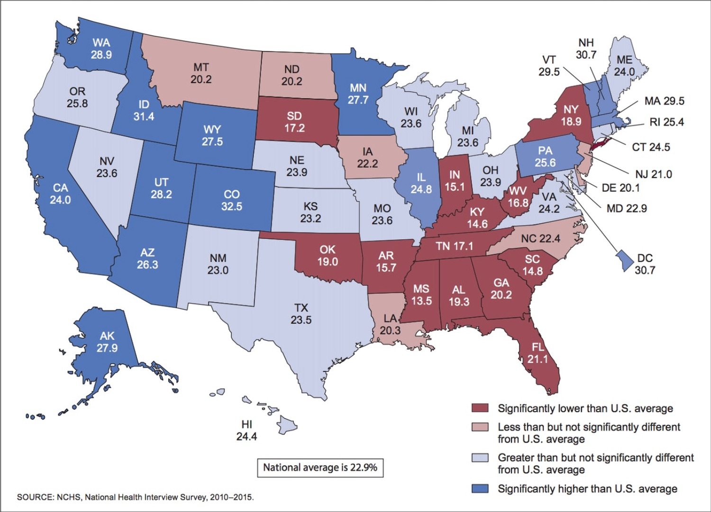

This is a place holder for data of the top ten states exercise numbers. I would like to make a bar graph to show the levels of the top states. This is data from the CDC maps.
 />The national average for exercise is 22.9%
Missouri has a 23.6% average. Kansas has a 23.2%
Mississippi is the worst in the country with a 13.5% average.
Thirty-one states are either significantly or slightly higher than the national average, with Utah, Wyoming, Arizona, Alaska, Idaho, Washington, California, Minnesota, Illinois, Pennsylvania, Vermont, New Hampshire, and Rhode Island leading the pack.
Nineteen states are significantly or slightly below average, with South Dakota, Indiana, Oklahoma, Arkansas, Kentucky, Tennessee, Alabama, Georgia, South Carolina, Florida, West Virginia, and New York at the bottom.
Other information more specifically about the states will be considered. The map lists all the states, so they can be broken down further.